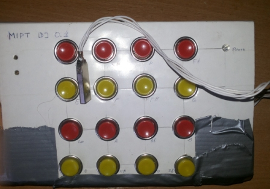

MIPT DJ 0.1
This is MIDI sampler for PC with 16 buttons
It is based on AVR ATMega-16A microcontroller. It connects to computer via USB using V-USB library.
Actually, it is just badly working prototype.
This is how it looks:
And this is how it works:
Last update: 13.04.2015